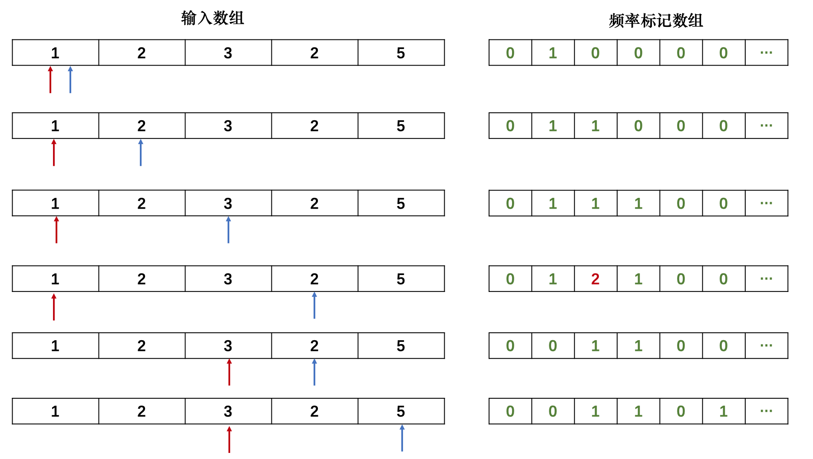

二分
整数二分算法模板
—— 模板题 AcWing 789. 数的范围
cpp除法默认是向下取整: 如 5 / 2 = 2
上取整 ==> 5 / 2 = 3 ==> 5+1 >> 1
下取整 ==> 5 / 2 = 2
>>右移运算符（Bitwise Right Shift）
用于将一个整数的二进制位向右移动指定的位数。每右移一位，相当于将数值除以 2。
int x = 8; // 二进制 1000
int y = x >> 2; // 结果是 2，二进制 0010
模板
整数数组必须是升序排列
L和R 都是下标
确定 mid(坐标) , 然后套模板
**L L L mid mid+1 r r r //mid 在左边 , mid = L + r » 1 , 自动取左 **
(尽量选 mid 在左边)
L L L mid-1 mid r r r //mid 在右边 , mid = L + r + 1 » 1
bool check(int x) { /* ... */ } // 检查x是否满足某种性质
// 区间[l, r]被划分成[l, mid]和[mid + 1, r]时使用：
l l l mid mid+1 r r r //mid 在左边 , l + r >> 1 , 自动取左
int bsearch_1(int l, int r)
{
while (l < r)
{
int mid = l + r >> 1;
if (check(mid))
r = mid; // check()判断mid是否满足性质
else
l = mid + 1;
}
return l;
}
// 向上取整
// ------------------------------------------------------------------------
// 向下取整
// 区间[l, r]被划分成[l, mid - 1]和[mid, r]时使用：
l l l mid-1 mid r r r //mid 在右边 , l + r + 1 >> 1
int bsearch_2(int l, int r)
{
while (l < r)
{
int mid = l + r + 1 >> 1;
if (check(mid))
l = mid;
else
r = mid - 1;
}
return l;
}
如果数据单调, 意味着可以二分
二分就是找两段不同性质数据的分界点
浮点数二分算法模板
—— 模板题 AcWing 790. 数的三次方根
bool check(double x) {/* ... */} // 检查x是否满足某种性质
double bsearch_3(double l, double r)
{
const double eps = 1e-6; // eps 表示精度，取决于题目对精度的要求
while (r - l > eps)
{
double mid = (l + r) / 2;
if (check(mid)) r = mid;
else l = mid;
}
return l;
}
前缀和
作用 : 快速求出一个区间的和 , O(1)
S[i] 为前缀和
S[i] = a[1]+ a[2] + .... + a[i],S[0] = 0(默认)S[i] = S[i-1] + a[i]- 求a数组中任意区间
[l,r]的和 :S[r] - S[l-1], 注意是求的是第L个 到 第R个数的和 (不是下标)
s[R] = a[1] + ... + a[L-1] + a[L] + ... + a[R]
s[L - 1] = a[1] + ... + a[L-1]
//结论
s[R] - s[L - 1] = a[L] + ... + a[R]
差分
yxc: 差分是前缀和的逆运算
a1 a2 ... an //数组前缀和
构造 b1 b2 ... bn
使得 ai = b1 + b2 + ... + bi
b1 = a1
b2 = a2 - a1
b3 = a3 - a2
...
bn = a_n - a_n-1
可以实现
O(1)时间把某一个数组区间的每一个值加上一个值X
example:
// a 是原数组 , b 是差分数组
b_l + x
b_r+1 - x
- 一开始可以把a看成 0 0 0 … 0
- 通过插入insert操作得到a数组
void insert(int l, int r, int c)
{
b[l] += c;
b[r + 1] -= c;
}
林小鹿: 类似于数学中的求导和积分，差分可以看成前缀和的逆运算。
差分数组：
-
首先给定一个原数组a：a[1], a[2], a[3],,,,,, a[n];
-
然后我们构造一个数组b ： b[1] ,b[2] , b[3],,,,,, b[i];
-
使得 a[i] = b[1] + b[2 ]+ b[3] +,,,,,, + b[i]
-
也就是说，a数组是b数组的前缀和数组，反过来我们把b数组叫做a数组的差分数组。换句话说，每一个a[i]都是b数组中从头开始的一段区间和。
考虑如何构造差分b数组？
最为直接的方法
如下：
a[0 ]= 0;
b[1] = a[1] - a[0];
b[2] = a[2] - a[1];
b[3] =a [3] - a[2];
........
b[n] = a[n] - a[n-1];
我们只要有b数组，通过前缀和运算，就可以在O(n) 的时间内得到a数组 。
知道了差分数组有什么用呢？ 别着急，慢慢往下看。
话说有这么一个问题：
给定区间[l ,r ]，让我们把a数组中的[ l, r]区间中的每一个数都加上c,即 a[l] + c , a[l+1] + c , a[l+2] + c ,,,,,, a[r] + c;
暴力做法是for循环l到r区间，时间复杂度O(n)，如果我们需要对原数组执行m次这样的操作，时间复杂度就会变成O(n*m)。有没有更高效的做法吗? 考虑差分做法。
-
始终要记得，a数组是b数组的前缀和数组，比如对b数组的b[i]的修改，会影响到a数组中从a[i]及往后的每一个数。
-
首先让差分b数组中的 b[l] + c ,a数组变成 a[l] + c ,a[l+1] + c,,,,,, a[n] + c;
-
然后我们打个补丁，b[r+1] - c, a数组变成 a[r+1] - c,a[r+2] - c,,,,,,,a[n] - c;
为啥还要打个补丁？
-
b[l] + c，效果使得a数组中 a[l]及以后的数都加上了c(红色部分)，但我们只要求l到r区间加上c, 因此还需要执行 b[r+1] - c,让a数组中a[r+1]及往后的区间再减去c(绿色部分)，这样对于a[r] 以后区间的数相当于没有发生改变。
-
因此我们得出一维差分结论：给a数组中的[ l, r]区间中的每一个数都加上c,只需对差分数组b做 b[l] + = c, b[r+1] - = c。时间复杂度为O(1), 大大提高了效率。
//差分 时间复杂度 o(m)
#include<iostream>
using namespace std;
const int N = 1e5 + 10;
int a[N], b[N];
int main()
{
int n, m;
scanf("%d%d", &n, &m);
for (int i = 1; i <= n; i++)
{
scanf("%d", &a[i]);
b[i] = a[i] - a[i - 1]; //构建差分数组
}
int l, r, c;
while (m--)
{
scanf("%d%d%d", &l, &r, &c);
b[l] += c; //将序列中[l, r]之间的每个数都加上c
b[r + 1] -= c;
}
for (int i = 1; i <= n; i++)
{
a[i] = b[i] + a[i - 1]; //前缀和运算
printf("%d ", a[i]);
}
return 0;
}
双指针
(双指针) O(n) 必要条件
- 先考虑暴力方式
- 确定目标数组的单调性
- i从 0开始 从前往后遍历
- j从 m - 1开始 从后向前遍历
#include <iostream>
#include <algorithm>
using namespace std;
const int N = 10001;
int a[N], b[N];
int main()
{
int n, m, x;
cin >> n >> m >> x;
for (int i = 0; i < n; i++)
cin >> a[i];
for (int i = 0; i < m; i++)
cin >> b[i];
// sort(a,a+n);
// sort(b,b+m); //必须保证两个数组都是单调的
for (int i = 0, j = m - 1; i < n; i++)
{
while( j >= 0 && a[i] + b[j] > x)
{
j--;
}
if(a[i] + b[j] == x)
{
cout << i << " " << j;
break;
}
}
return 0;
}
#include <iostream>
#include <algorithm>
using namespace std;
const int N = 100100;
int a[N], b[N];
int main()
{
int n;
cin >> n;
for (int i = 0; i < n; i++)
{
cin >> a[i];
}
int ans = 0;
for (int i = 0, j = 0; i < n; i++)
{
b[a[i]]++;
while (b[a[i]] > 1)
{
b[a[j]]--;
j++;
}
ans = max(ans, i - j + 1);
}
cout << ans;
return 0;
}

归并排序
分治
模板
void merge_sort(int q[], int l, int r)
{
if (l >= r) return;
int mid = l + r >> 1;
merge_sort(q, l, mid);
merge_sort(q, mid + 1, r);
int k = 0, i = l, j = mid + 1;
while (i <= mid && j <= r)
if (q[i] <= q[j]) tmp[k ++ ] = q[i ++ ];
else tmp[k ++ ] = q[j ++ ];
while (i <= mid) tmp[k ++ ] = q[i ++ ];
while (j <= r) tmp[k ++ ] = q[j ++ ];
for (i = l, j = 0; i <= r; i ++, j ++ ) q[i] = tmp[j];
}
L L L r r r
- 确定分界点
- 递归排序 left right
- 归并 – 合二为一
多路归并
重点是 merge() 函数
贡献法
- 是一种数学思想
- 原本是对矩阵的行进行操作, 换一种方式, 变成对矩阵的列进行操作
- 孤独的区间 , 只有1个
| n➡️ 0 | 1 | 2 | … | n | |
|---|---|---|---|---|---|
| 所有区间⬇️ | |||||
子串是连续的
日期问题
求闰年模板
const int months[] = {0, 31, 28, 31, 30, 31, 30, 31, 31, 30, 31, 30, 31};
// 一三五七八十蜡，三十一天永不差
// 一、1、3、5、7、8、10、12 每月31天，4、6、9、11为30天。 二、2月正常为28天，如果为闰年，则多一天为29天。
int is_leap(int year) //判断闰年
{
if (year % 4 == 0 && year % 100 || year % 400 == 0)
return 1;
return 0;
}
int get_days(int y, int m)
{
if ( m == 2)
return 28 + is_leap(y);
}
int months[13] = {0, 31, 28, 31, 30, 31, 30, 31, 31, 30, 31, 30, 31};
bool check(int date) // 判断日期是否合法
{
int year = date / 10000;
int month = date % 10000 / 100;
int day = date % 100;
if (!day || month < 0 || month > 12)
return false;
if (month != 2 && day > months[month])
return false;
if (month == 2)
{
if ((year % 4 == 0 && year % 100 != 0) || (year % 400 == 0)) // 闰年特判
{
if (day > 29)
return false;
}
else
{
if (day > 28)
return false;
}
}
return true;
}
求区间天数

思想是计算各个日期到公元1.1.1的天数, 再将计算结果相减+1 , 得到结果
模板
int months[13] = {0, 31, 28, 31, 30, 31, 30, 31, 31, 30, 31, 30, 31};
// 一 三 五 七 八 十 蜡，三十一天永不差
//或
const int months[] = {0, 31, 28, 31, 30, 31, 30, 31, 31, 30, 31, 30, 31};
#include <iostream>
#include <cstdio>
#include <algorithm>
#include <string>
using namespace std;
int months[13] = {0, 31, 28, 31, 30, 31, 30, 31, 31, 30, 31, 30, 31};
int day(int n)
{
int y = n / 10000; // 年
int m = n % 10000 / 100; // 月
int d = n % 10000 % 100; // 日
// 首先更新一下计算年份的二月天数有多少
// 闰年包括普通闰年和世纪闰年
// 普通闰年年分是4倍数不是100倍数（），世纪闰年是400的倍数，
// 即100的倍数不是4的倍数不是闰年，如1900
// 判断闰年
if (y % 4 == 0 && y % 100 != 0 || y % 400 == 0)
months[2] = 29;
else // 不加这个会错
months[2] = 28;
//统计当前年份的总天数 (今年的天数)
while (m--)
d += months[m];
//计算从公元1年开始开始，一直到<去年>最后一天,不是到0000年
while (y--)
d += (y % 4 == 0 && y % 100 != 0 || y % 400 == 0 ? 366 : 365); // 闰年366天，平年365天
return d;
}
int main()
{
int a, b;
while (cin >> a >> b)
cout << abs(day(a) - day(b)) + 1 << endl;
// 由题所示“如果两个日期是连续的我们规定他们之间的天数为两天”，因此我们加一
return 0;
}
区间合并
任意多个区间的范围有交集, 快速把这几个区间合并
贪心思想
模板ycx
// 将所有存在交集的区间合并
void merge(vector<PII> &segs)
{
vector<PII> res;
sort(segs.begin(), segs.end());
int st = -2e9, ed = -2e9;
for (auto seg : segs)
if (ed < seg.first)
{
if (st != -2e9) res.push_back({st, ed});
st = seg.first, ed = seg.second;
}
else ed = max(ed, seg.second);
if (st != -2e9) res.push_back({st, ed});
segs = res;
}
-
按区间左端点排序
-
start_________________________end 三种情况⬇️
- f—–s 在区间内 这情况等于不用操作
- f———————-s 右端点超出
- f———-s 全部超出
void merge(vector<Pii> &segment)
{
vector<Pii> ans;
sort(segment.begin(), segment.end()); // 默认排序左端点
int start = -2e9, end = -2e9;
for (auto seg : segment)
{
if (end < seg.first)
{
if (start != -2e9) // 没有交集
ans.push_back({start, end});
start = seg.first, end = seg.second;
}
else
{
end = max(end, seg.second); //合并情况不添加ans
}
}
if (start != -2e9) // 防止vector是空集 , 空集就是也是一个区间
ans.push_back({start, end});
segment = ans;
}